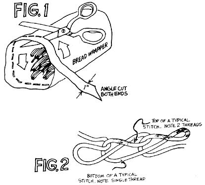
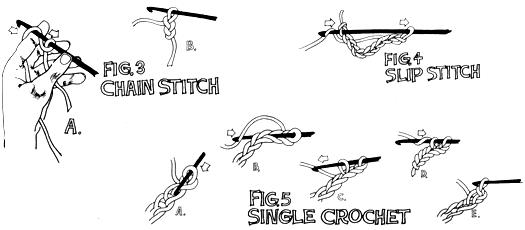

Making something pretty and useful with your own hands brings out a feeling of pride and accomplishment . . . especially when that new item is constructed of "trash" that would otherwise have been thrown away. Additionally, in this day of inflated prices, it's a real discovery to find a worthwhile craft material that doesn't cost a cent. And finally, it's always satisfying to find a way-however small-to solve the mounting problems of waste disposal.
I find that I can blend an interesting home craft with a small attack on both inflation and today's pollution problem by recycling throwaway bread wrappers into soft, cushiony, crocheted rugs. The finished floor coverings are ideal for protecting the bathroom floor by the tub or under the sink and are just as good for other uses, both in and outside the house. My husband, for instance, made off with one of my four-foot circular throws before I ever had a chance to spread it in front of the kitchen sink (I'd made the rug just for that spot, too). The mat, he says, is perfect for lying on when he works under the car and it has now become a permanent part of his equipment.
There's nothing complicated about preparing the bread wrappers for crocheting. Start at the open end of each empty bag and cut a continuous spiral-about an inch wide-around and around the sack until you reach the part that's glued together on the other end (this small remaining piece is all the waste you'll have to throw away). The beginning and end of each strip should taper to a point (Fig. 1).
One tool-a single metal crochet hook of the size used for rug yarn-is the only equipment you'll need to turn even the biggest stack of wrapper spirals into durable and colorful floor coverings. Do make sure that hook is metal, though, because plastic ones have a tendency to stick to the wrappers.
Your first step in making a bread wrapper rug of any size will be to fold one of the inch-wide strips right down the middle so that it's only one half inch wide (the finished floor covering will be more colorful if you turn the printed side of the plastic out). Next lay the crochet hook down and pass the end of the ribbon under and around the widest part of the hook's handle or shaft and securely tie the strip with a double knot. (NOTE: the ribbon is not actually tied to the shaft . . . instead, the handle is used as a "spacer" around which the beginning loop of your rug's chain stitch is formed and knotted.)
Once you've tied the first loop into the end of your first plastic strip, pick up the crochet hook in your right hand, hold the dangling plastic ribbon in your left and slide the newly formed loop down the shank of the tool until the ring is about an inch from the hooked end of your tool. Catch the ribbon of plastic with the instrument's crook and pull the strip through the knotted ring (thereby forming a second loop). Slide the crochet hook forward for another bite of ribbon and pull it back to form loop number three. The continuing series of interconnected slipknots you're making is called a chain stitch (Fig. 3) and you can extend the procession indefinitely . . . or until you come to the end of your first plastic string.
When you've crocheted to within a few inches of the end of your "yarn", open the folded plastic flat, place the end of a new strip over it (with an overlap of about three inches), fold the two ribbons together and continue with the chain stitch. This way, there won't be any knots in your finished work.
The second stitch you'll need to know how to make (and it's just as easy to learn as the first) to assemble a bread wrapper rug is known as the slip stitch (Fig. 4). This one is made by passing the hook through a previously formed stitch (while maintaining the loop that's already on the needle) before hooking a fresh section of ribbon and pulling it through both old loops to form a single new one. You'll use this slip stitch to do things like fasten together two ends of a section of chain stitching.
The only other stitch you'll need to master for your rug making is called the single crochet (Fig. 5). For the first half of this one you'll dirt the loop on your needle up the shank until it's out of the way. Then you'll pick up a formed stitch before hooking a fresh bite of ribbon which is pulled only through the formed stitch and not through the loop being maintained on the needle's shaft. (At this point-Fig. 5c-you'll have two loops-the brand new one and the one you started with--on tire shank of the needle.) The single crochet stitch is then finished by pulling a fresh section of ribbon through both the loops on the needle . . . to make a single new loop (Fig. 5e). As you add row on row to your rugs, you'll find this stitch almost as important as the basic chain stitch.
To start a round rug, chain stitch five times-making sure you don't pull the loops too tight-and slip stitch the ends of the chain together to form a ring. Now, reaching through the center of the circle (instead of through any of the individual five stitches) for the first half of each and reaching outside the circle for the second half of each . . . form enough single crochet stitches-usually about ten-to reach completely around the ring.
Don't stop forming single crochet stitches once you've completed the circuit. Make the next one through the top (see Fig. 2 for an explanation of the "top" and "bottom" of a stitch) of the slip stitch used to join the ring and continue on around the circle, hooking-as you go-a new row of single crochet stitches into the row you've just laid down.
You'll have to increase the number of single crochet stitches in this new round by putting two into every other stitch or so of the row inside. (No hard and fast rule can be made for increasing but, in general, when you find yourself reaching with the hook for the next loop . . . it's time to add a stitch.) Continue around the developing rug for another few rows and then lay the piece of work on a flat surface. If its edge curves up like the sides of a bowl, you're not increasing enough. If the edge ruffles, you're increasing too much. In either case, pull the stitches out until the rug lies flat and try again. It pays to check often.
Continue working around the expanding perimeter until your rug is as large as you want and-leaving five or six inches of the plastic strip hanging free-end your crocheting with a couple of slip stitches. Pull the remaining ribbon through the last loop and use the crochet hook to work the tail in and out of stitches in the previous row until the strip is used up and none is left dangling.
Before beginning an oval floor covering, you must determine the site you want the finished product to be. Remember that-since you'll be working around the center (as with a round rug)-you'll be adding an inch of length for every additional inch of width the piece grows (and vice versa) . . . so you must determine the proportions of the finished rug before you begin.
The chain with which you start an oval design should be as long as the difference between the length and width of the completed piece. That is, if you want a rug 48 inches long and 30 inches wide, the starting chain should be 18 inches in length (48 minus 30).
To make the throw just described, crochet a chain 18 inches long, add three additional chain stitches (for the first turn), turn and single crochet back (using the top of the 18-inch length of chain stitches as a base). Continue making single crochet stitches right on around the end of the series of chain stitches (increase as necessary going around the turn) and proceed to build the rug outward just as you would crochet a round design. Increase enough on the ends to keep the rug flat and smooth and do stagger the increase stitches to keep the shape oval (adding the extra stitches at the same points on each round will produce square corners). Finish as you would finish a round design.
A square or rectangular rug is made a little differently (by working back and forth instead of round and round). Begin such a design with a series of chain stitches as long as the desired width of the finished work . . . then chain three more times, turn and single crochet the next row using the top of the chain stitches as a base. When you reach the end of the line of single crochet stitches, chain three times, turn (the other way this time), add another row of single crochet stitches, chain three times, turn the way you turned the first time, etc. Continue this back-and-forth pattern until the rug is as long as you want it.
It's a good idea, when making a squared-off rug, to stop at the end of the first single crochet row and count all the stitches in that tier (but not the three chains at either end). Then, as you continue to work, check occasionally to make sure you're not increasing or decreasing the number of stitches you add each time across.
You can wash and spin dry your bread wrapper rugs in the washing machine, but never put them in a dryer. Hang the damp pieces over a line instead.
Once you've had the satisfaction of creating one of these colorful pieces, remind yourself again that you obtained the raw materials for the handiwork absolutely free . . . and that your recycling efforts have helped limit air, water and land pollution just a tiny bit. That will probably lead you to wonder why-when recycling works so well with so little effort on a small scale-big business, government and labor can't make it work on a large scale. Why is that?
|
 |
 |
|